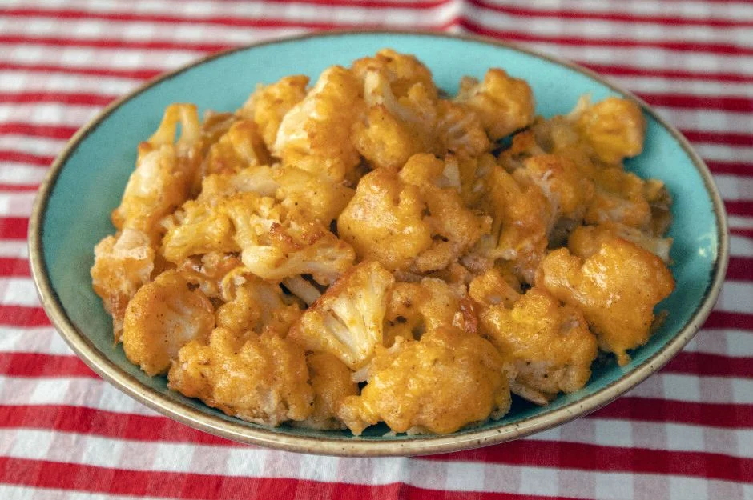

Nar Gibi Kızarıyor: Fırında Karnabahar Kızartması Tarifi
Çorbasıyla, grateniyle her haline bayıldığımız karnabahar, leziz hallerinden biriyle sofralarımıza tekrar döndü.
Kızartma yaparken çok yağ çekiyor üstelik de kalorili oluyor diyenlerdenseniz, sizi hemen buraya alalım.
Yağ oranını azalttık, üstelik fırında kızarttık ve mis gibi bir karnabahar kızartması hazırladık sizlere.
Hem sağlıklı bir atıştırmalık, hem de ana yemek olarak tüketebileceğiniz bir karnabahar tarifi bu.
Bir kasede karışımı hazırlayarak karnabaharları unlu ve yumurtalı karışıma batırıyoruz ve ardından fırına verip güzelce kızarmasını bekliyoruz.
Şipşak hazırlayacağınız fırında karnabahar kızartmasının pişmesini beklerken kendinizi zor tutacaksınız.
Şimdiden afiyetler olsun!

Kaç Kişilik :4 kişilik Hazırlama Süresi:10dk Pişirme Süresi :45 dk
Fırında Karnabahar Kızartması Tarifi İçin Malzemeler
- 1/2 adet karnabahar
- 1/2 su bardağ un
- 1 çay bardağı süt
Fırında Karnabahar Kızartması Tarifi Nasıl Yapılır?
- Karnabaharın yapraklarını ayırın, temizleyin ve çiçeklerine ayırın.
- Tencereye su koyun ve kaynatın. Kaynattığınız suda karnabahar çiçeklerini hafifçe haşlayın. Fırına vereceğiniz için tamamen haşlanmamasına özen gösterin.
- Diğer tüm malzemeleri bir kaseye alın ve birleşinceye dek bir çırpıcıyla karıştırın.
- Karnabaharları hazırladığınız karışma batırıp yağlı kağıt serdiğiniz fırın tepsisine dizin.
- Önceden ısıtmış olduğunuz 200 derece fırında alt-üst ayarı açık şekilde 30 dakika, sadece üst ayarı açık şekilde 15 dakika daha pişirin. Sadece turbo-fanlı ayar kullanacaksınız toplamda 35 dakika yeterli olacaktır.